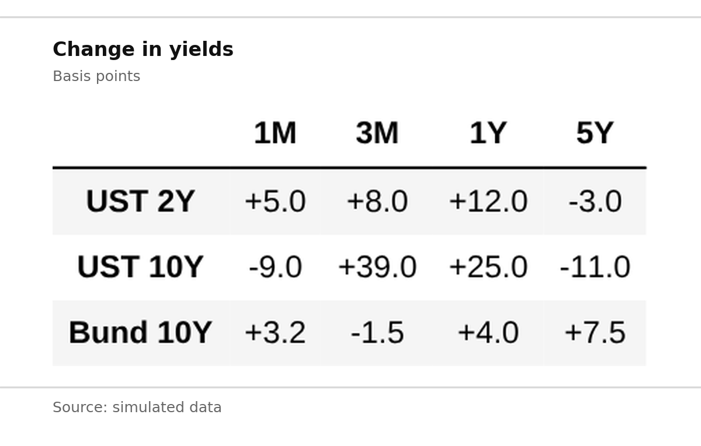

DfStyling: Getting Started¶
DfStyling turns pandas DataFrames into presentation-ready images. The central class is TableSheet: it holds one or several tables (and charts), records the styling you apply to each, and composes everything (sheet title, panel titles, notes, sources) into one image that you can preview in a notebook, save as PNG / PDF / SVG, or insert into a presentation.
import helpers_ps as hp
sheet = (
hp.DfStyling.TableSheet(df, width_in=7)
.style_table(font_size=11, text_align="center")
.format("{:.1f}")
.panel(title="Yield changes", subtitle="Basis points")
.add_source("Source: Bloomberg")
)
sheet.preview() # show it in a notebook
sheet.save("yield_changes.png") # write it to disk
Like GraphMtplt, every method returns the sheet, so everything chains.
Requirements¶
Tables are drawn by a headless Chromium browser (through Playwright), so the HTML/CSS of a pandas Styler is reproduced exactly.
| Need | How |
|---|---|
playwright |
pip install playwright |
| A Chromium-based browser | Any Google Chrome or Microsoft Edge installed on the machine is used automatically. Otherwise run python -m playwright install chromium. |
| The font | Inter is the default font of titles and notes. If it is not installed, DejaVu Sans is used. |
You can point to a specific browser with a custom renderer:
from helpers_ps.DfStyling import PlaywrightRenderer
renderer = PlaywrightRenderer(chrome_path=r"C:\Program Files\Google\Chrome\Application\chrome.exe")
sheet = hp.DfStyling.TableSheet(df, renderer=renderer)
Browser launch
The browser is launched once per render, with all tables of the sheet rendered in the same batch, and results are cached by content. Changing a title, the layout or the spacing never launches the browser again; changing the styling of one table only re-renders that table.
Your first table¶
import numpy as np
import pandas as pd
import helpers_ps as hp
yields = pd.DataFrame(
{
"1M": [5.0, -9.0, 3.2],
"3M": [8.0, 39.0, -1.5],
"1Y": [12.0, 25.0, 4.0],
"5Y": [-3.0, -11.0, 7.5],
},
index=["UST 2Y", "UST 10Y", "Bund 10Y"],
)
sheet = (
hp.DfStyling.TableSheet(yields, width_in=6)
.style_table(font_size=11, text_align="center")
.format("{:+.1f}")
.panel(title="Change in yields", subtitle="Basis points")
.add_source("Source: simulated data")
)

In a notebook, sheet.preview() shows the result. sheet.save("table.png") writes it.
The mental model¶
| Concept | What it is |
|---|---|
| Sheet | The whole image: optional title, a grid of panels, general notes and sources. |
| Panel | One element of the grid: a table (a DataFrame / Styler plus its styling) or an image (usually a chart). |
| Active panel(s) | The styling methods apply to the active panels. The newest panel is active; select others with on("name") or on() for all. |
| Recipe | A table is stored as its source plus the ordered list of operations applied to it. The Styler is rebuilt from that recipe whenever needed, so re-running a notebook cell never accumulates CSS. |
Typical flow:
- Create the sheet with one or several DataFrames (
TableSheet(df),TableSheet({"a": df1, "b": df2}), oradd_table()). - Style each table (
style_table,format, borders, highlights, color ranges...). See Styling tables. - Describe each panel (
panel(title=..., notes=...)) and the sheet (add_title,add_note,add_source). - Arrange the panels on a grid (
layout) and set the size (Panels, charts and layout, Sheet appearance and output). - Output:
preview(),save(),to_bytes(),figure.
Method overview¶
| Group | Methods | Page |
|---|---|---|
| Create / select panels | TableSheet(...), add_table, add_image, on, remove, panel_names |
Panels |
| Panel texts | panel(title, subtitle, notes, align, valign, scale, ...) |
Panels |
| General table style | style_table, table_border, header_line, format |
Styling tables |
| Cells, rows and columns | style_cell(s), border_cell(s), highlight_rows, highlight_columns, border_rows, border_columns |
Styling tables |
| Conditional colors | text_color_by_range, background_color_by_range, apply_styler |
Styling tables |
| Sheet text | add_title, add_note, add_source |
Appearance |
| Grid and size | layout, config_layout, subplots_adjust |
Panels, Appearance |
| Output | preview, render, save, to_bytes, to_array, figure, size_in, last_path |
Appearance |
| Debugging | recipe, clear_styles |
Styling tables |
The complete signatures are in the API reference.
Functional API (without a sheet)¶
The styling operations also exist as functions that take and return a pandas Styler: style_table, style_cell, style_cells, border_cell, border_cells, highlight_rows, highlight_columns, border_rows, border_columns, text_color_by_range and background_color_by_range. TableSheet uses them under the hood. They are useful when you want the styled DataFrame itself, for example to export it to Excel with to_excel_closed_styled. See Functional styling.